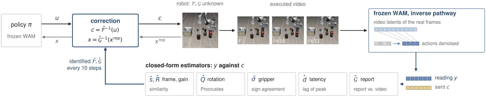
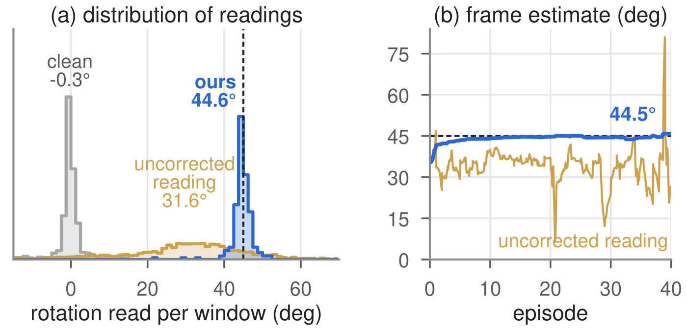
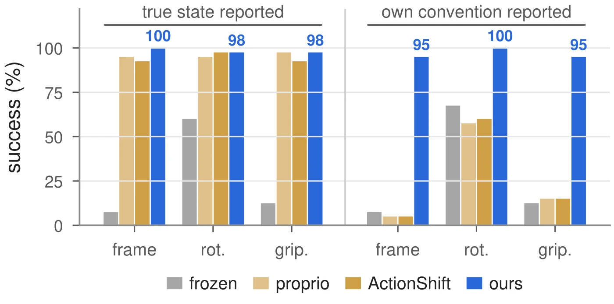
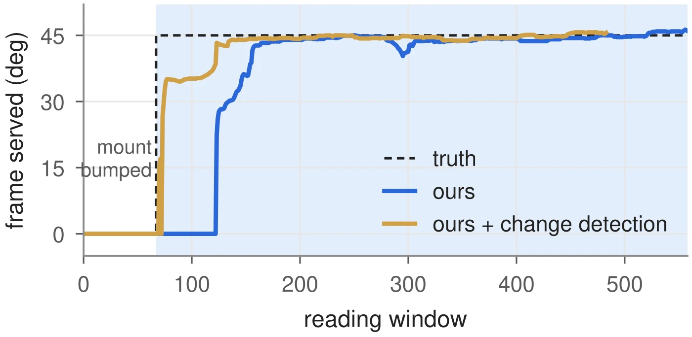
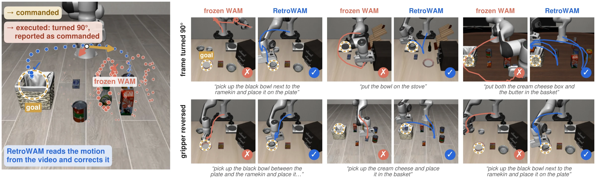

Abstract
Robot policies are often deployed on robots their developers never see, where the same command can produce a different motion: the command frame is rotated, the gain differs, rotation deltas follow another convention, the gripper is inverted, or the camera lags. If the robot also reports its state in its own convention, the state matches the commands and only the camera shows the error: proprioceptive correction is blind, and point trackers miss orientation and gripper errors. We show that a world action model (WAM) already contains the missing sensor: run in reverse on the real video, its video pathway reads out the action the robot performed. We propose RetroWAM, which uses closed-form estimators to compare these readings with the commands sent, identify the interface online, and correct both the commands and the reported state, with no calibration, training or extra hardware. We prove that, in expectation, the corrected translation estimate converges to the true interface whenever each fit is invertible, even though every reading is pulled towards the policy's prior. We also show that the estimates transfer to policies without any video pathway and follow a robot whose interface changes during deployment. Across three WAM backbones on LIBERO, the frozen policy fails most tasks under most errors, and corrections that read the reported state barely improve on it when the robot reports in its own convention. RetroWAM identifies the errors from the video and recovers most of the lost success under every one of them, even when proprioception sees no error.
Who Can See the Error?
One model is released or served to many robots, the units of a fleet differ in mount, tool, controller tuning and camera, and a firmware update, tool change or new camera alters a robot during deployment. Between a policy and the motors sits an action interface: the frame in which a translation is expressed, the controller gain, the convention for rotation deltas, the polarity of the gripper command, and the delays of camera and actuation. A frozen policy can fail completely when it differs from the training robot's, and such mismatches are mundane: two common robot drivers differ by 180° in their base frame, and training and evaluation code for the same policy can disagree on the gripper sign. A mismatch does not announce itself: a failed task does not say whether the interface is wrong or the policy fails to generalize, and frame angles, gains and latencies take continuous values and combine, so there is no short list of switches to try.
The robot also reports its state, and the report decides which sensor sees the error. If the true state is reported (P), proprioception sees it. If the robot reports in its own convention (C), as a driver with different conventions does, the reported motion equals the command, every proprioceptive residual is zero and only the camera shows the error. If only the report is wrong (R), proprioception sees an error that is not there. A point or flow tracker sees the end effector move the wrong way, but not a rotation about the end effector or a reversed gripper. A readout of the executed action from video depends only on what the robot did, so it can identify the interface in all three modes.
Method

- Read. A WAM is trained to predict future video jointly with actions, so its video pathway doubles as an inverse model. After every window of 32 executed steps, the real frames are encoded and held clean while the action denoiser runs from noise. The result is a reading of what the robot actually did, in the policy's own action units.
- Estimate. Closed-form estimators compare the readings with the commands that were sent: a similarity for the frame and gain, orthogonal Procrustes for the orientation convention, sign agreement for the gripper, the lag of the peak correlation for latency, and a test of the reported motion against the commands and the video for the report convention.
- Correct. Every new chunk is mapped through the inverse of the identified interface before it is sent, each plan is served from the identified lag, and the reported state is mapped back before the policy sees it. No parameter is trained, no calibration routine is run, and the checkpoint is never modified.
A reading is not an ordinary measurement. The WAM denoises actions consistent with both the video and its prior over what the policy does, so when the executed motion is unusual, the reading is pulled towards what the policy intended. We model each reading as a mixture of the executed and the intended action and prove that the corrected loop has the true interface as its unique fixed point and contracts towards it; sign errors are identified in one step when the evidence weight exceeds one half.

Results
We evaluate on LIBERO-Interface, a suite of action-interface errors under the three report modes, built on LIBERO's four suites (40 tasks). The error is applied between the policy and the simulator in the evaluation client, so the method has no access to its parameters. Baselines replace the reading by proprioception, image motion or a trained inverse-dynamics model, or correct the policy from the reported state.
OpenWAM-alpha, 40 tasks (development split): successes out of 40
| Cell | Frozen | RetroWAM | SC-VLA | ActionShift | RoboAda | Flow | Ideal pt. | Oracle |
|---|---|---|---|---|---|---|---|---|
| Clean | 40 | 40 | 40 | 39 | 37 | 40 | 40 | 40 |
| A1 yaw 45° (P) | 11 | 38 | 9 | 38 | 6 | 40 | 40 | 40 |
| A1 yaw 45° (C) | 14 | 40 | 12 | 13 | 13 | 39 | 40 | 40 |
| A1 convention 90° (C) | 0 | 38 | 0 | 0 | 0 | 36 | 38 | 39 |
| A1 convention 180° (C) | 0 | 33 | 0 | 0 | 0 | 32 | 26 | 40 |
| A2 hand-eye 45° (C) | 15 | 40 | 21 | 15 | 16 | 38 | 39 | 40 |
| B1 gain 0.3 (P) | 22 | 39 | 23 | 21 | 35 | 38 | 40 | 36 |
| B1 gain 0.3 (C) | 11 | 32 | 13 | 8 | 10 | 27 | 33 | 36 |
| B2 power 2, yaw 45° (P) | 5 | 35 | 1 | 28 | 7 | 35 | 35 | 40 |
| B2 power 3, yaw 45° (P) | 3 | 32 | 2 | 7 | 12 | 24 | 28 | 39 |
| C1-P orientation | 21 | 40 | 20 | 38 | 26 | 20 | 20 | 40 |
| C2-P gripper | 3 | 39 | 3 | 38 | 3 | 3 | 4 | 40 |
| C1-C orientation | 28 | 40 | 26 | 28 | 23 | 27 | 27 | 40 |
| C2-C gripper | 3 | 39 | 3 | 6 | 5 | 4 | 3 | 40 |
| C1-R orientation report | 34 | 38 | 34 | 24 | 24 | 35 | 35 | 40 |
| C2-R gripper report | 40 | 40 | 40 | 3 | 38 | 38 | 40 | 40 |
| D1 camera latency 10 (P) | 19 | 35 | 18 | 17 | 16 | 3 | 11 | 35 |
| F1 occlusion + yaw 45° (P) | 3 | 29 | 8 | 30 | 5 | 32 | 27 | 32 |
P: the true state is reported; C: the robot reports in its own convention; R: only the report is wrong. Bold marks the best non-oracle result. SC-VLA: its best configuration run. ActionShift: its pool holds every cell's execution map except the nonlinear B2 gains. RoboAda: released code and models, default configuration. Oracle: the true interface inverted and clipped to the action box, a ground-truth reference (gray, not ranked).
RetroWAM leaves clean episodes unharmed and lifts every command-interface error to 32–40 of 40 tasks (frozen 0–28), 29 with the scene camera partly occluded. When the robot reports in its own convention, the proprioceptive methods stay at the frozen level, and the trackers, which see only the end effector's image motion, cannot see the orientation and gripper conventions. On the held-out test split (initial states 1–3, 120 paired episodes per cell, run after the configuration was frozen), RetroWAM solves 73–120 of 120 under every command-interface error (frozen 0–75).

Second and third backbones (development split)
| Cell | FastWAM Optional IDM, of 40 | Fast-WAM release, of 40 | LingBot-VA, of 10 | |||||
|---|---|---|---|---|---|---|---|---|
| Frozen | E1 | E3 | Proprio | Frozen | E2 | Frozen | E1 | |
| Clean | 39 | 39 | 39 | 39 | 40 | 40 | 10 | 10 |
| A1 yaw 45° (P) | 3 | 40 | 38 | 38 | 0 | 35 | 0 | 9 |
| A1 yaw 45° (C) | 3 | 38 | 34 | 2 | 1 | 30 | – | – |
| C1-P orientation | 24 | 39 | 38 | 38 | 19 | 36 | 2 | 10 |
| C2-P gripper | 5 | 39 | 36 | 39 | 3 | 34 | 0 | 10 |
| C1-C orientation | 27 | 40 | 37 | 23 | 24 | 37 | – | – |
| C2-C gripper | 5 | 38 | 5 | 6 | 3 | 3 | – | – |
E1: RetroWAM, reading throughout. E3: reading in the first episode only, then fixed estimates, acting in first-frame mode with no inverse pass. E2: the E3 estimates applied to the action-only Fast-WAM release, a policy with no video pathway. LingBot-VA: LIBERO-Long, its only released LIBERO checkpoint; it takes no proprioception, so its C rows are not run (–).
The interface is a property of the robot. Read once with the video pathway, it serves any policy that uses the same action units: the estimates from FastWAM's first episode lift the action-only Fast-WAM release from 0–24 to 30–37 of 40 on the five cells that identify in one episode.

Qualitative Results

BibTeX
@article{jiang2026retrowam,
title = {RetroWAM: World Action Models Self-Calibrate Their Robots by Reading, Not Imagining},
author = {Jiang, Austin},
year = {2026}
}